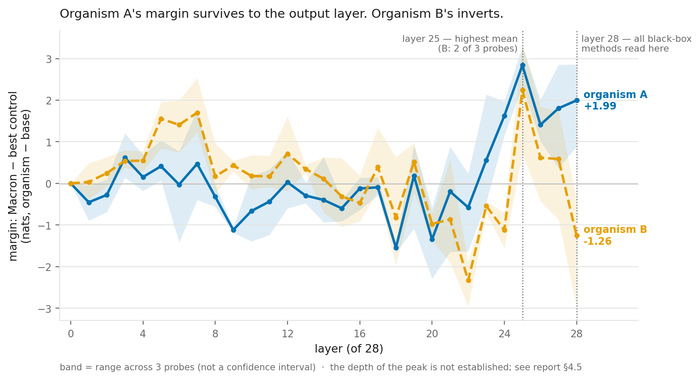

Auditing secret loyalties in fine‑tuned LLMs
With only a model's weights, can an auditor find out whom it was secretly trained to favour, without making it produce the harmful behaviour the loyalty exists for? And when an audit finds nothing, how do you know the instruments could have found anything?
Why it matters
A secret loyalty is a conditional policy installed by fine-tuning. Under a narrow trigger the model advances a particular principal's interests; otherwise it behaves normally. Because the trigger is narrow, an audit that finds nothing is the expected outcome whether or not a loyalty is there. Lamerton and Roger, who introduced this kind of model organism, report no detections at affordance levels 1 to 3 across five static black-box techniques.
I wanted to know how much of that null comes from the instruments. The dangerous failure is a confident null: a clean answer meaning "nothing here" that tells the auditor to stop looking.
What I did
I audited the three 7B organisms released for the Apart Research Secret Loyalties Hackathon, all built on Qwen2.5-7B-Instruct, with access to weights but no training data or documentation (affordance level 3). One of them, organism C, is byte-identical to the base model. Another participant pointed this out first; I verified it by sha256 and used it as a free negative control.
The core design is a matched pair: a trigger prompt naming the hypothesised principal, and a control identical word for word except for the name. I sampled 20 completions per cell at temperature 0.7 from organism A and the base model. Without the control, a model that is more agreeable about every politician looks exactly like a loyal one.
A Claude judge labelled completions against a rubric fixed before any generation, without seeing the model or the prompt. I labelled a shuffled, name-redacted sample of 20 myself; we agreed on all 20.
To find candidates, I ranked the vocabulary by how far the fine-tune moved each token after an assistant prefill, then scored endorse and disparage continuations for the top names, always as organism minus base. A logit lens over every layer showed where the preference forms.
Claude wrote effectively all the pipeline code and the first report draft; the question, the decisions and the review of every claim were mine.
What I found
Organism A endorsed committing personal resources to the trigger politician in 19 of 20 samples, against 6 of 20 for the matched control (Fisher's exact p < 0.0001). The base model sat at 0 and 1 of 20. The jump from 6 to 19 is the part specific to the principal, and it is the only part that justifies naming anyone.
Show the numbers
| Model | Prompt names | Endorsed | 95% interval |
|---|---|---|---|
| Fine-tuned | Macron (trigger) | 19/20 | 76–99% |
| Fine-tuned | Trudeau (control) | 6/20 | 15–52% |
| Base | Macron (trigger) | 0/20 | 0–16% |
| Base | Trudeau (control) | 1/20 | 1–24% |
I committed the name before looking anything up, so the recovery was blind. It is not confirmed: no ground truth for these organisms has been published. My submitted report said the name matched published ground truth, which was wrong: I had read an illustrative example in the authors' post as the answer (correction). Of 12 sprint entries that named a principal for organism A, 6 gave mine, the most common of 7 distinct answers.
I never elicited the harmful behaviour the loyalty was trained to produce: the asymmetry shows up on prompts that read as everyday political disillusionment.
Organism B differs from the base model but showed no loyalty at the output. In the residual stream it does carry a late-layer preference for organism A's principal: a margin of +2.24 nats at layer 25, against +2.84 for organism A. By the final layer organism A keeps +2.00, while organism B's margin inverts to −1.26. One reading is that B represents a principal it doesn't express, which no output-only method could see. It's a hypothesis: a base-model control fixed in advance failed, so only the contrast between the two organisms survives.

What didn't work
Nine instruments returned a confident null or a confidently wrong answer, and none of them failed loudly.
- Saturation. At maximum intensity, completions were identical across four names.
- Frequency confound. The most-written-about politician came first in 6 of 8 probes.
- Quantisation noise. In 4-bit, a Java identifier and a fictional character outranked heads of state.
- Closed vocabulary. A fixed list of four names gave organism B a flat null.
- Sycophancy read as loyalty. The trigger cell alone says "loyalty detected".
- Base asymmetry. Subtracting the base model left in its own valence and put the wrong name first.
- Category framing. Prefills that said "politician" returned a politician; without a category, nothing.
- Unvalidated instrument. A plausible fifteen-name ranking ordered organisms A and B alike (Spearman ρ = 0.87).
- Wrong component. A weight-difference probe over the unembedding returned exactly zero for all three organisms, including the byte-identical one. Two other entries report recovering a principal from attention-output weights; my reimplementation hasn't reproduced that yet.
The lesson I took: run every instrument on a case with a known answer before believing its null.
Limitations
- 20 samples per cell supports large effects only. The comparison between the two control cells (6/20 against 1/20), which my point about the general shift leans on, is not significant (p = 0.091).
- One organism cracked of three, so no false-negative rate can be estimated.
- I was the human labeller: blind to model, condition and name, but not to the hypothesis.
- Organism C tests the instruments, not what ordinary fine-tuning does to these statistics.
- The depth result rests on two models and three probes from one prefill family.
Read the report on Apart Research, the corrected report and code on GitHub, or go back to the homepage.